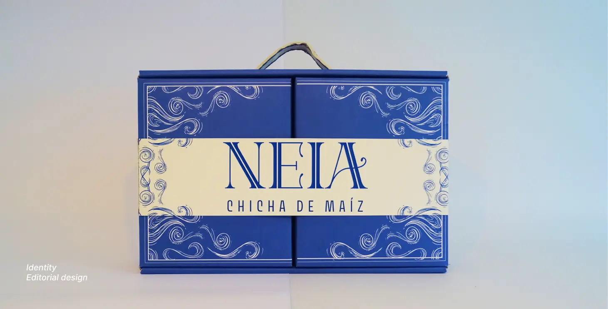
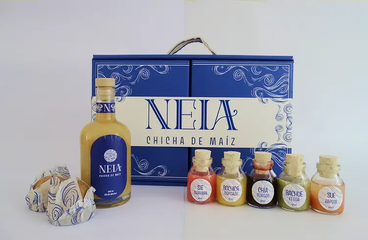
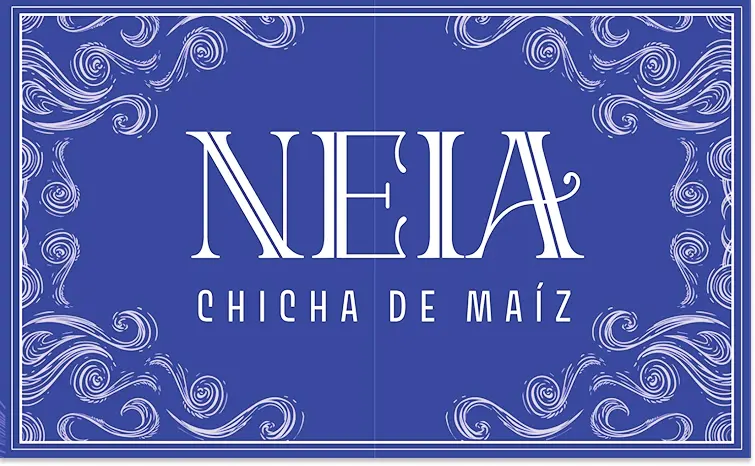
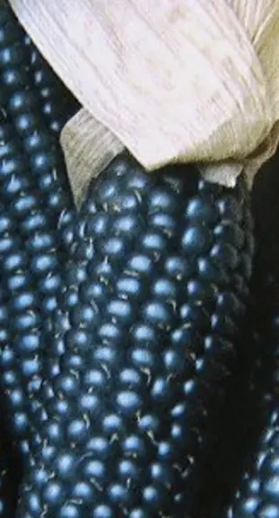
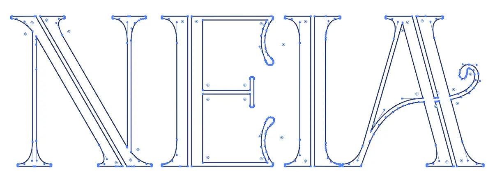
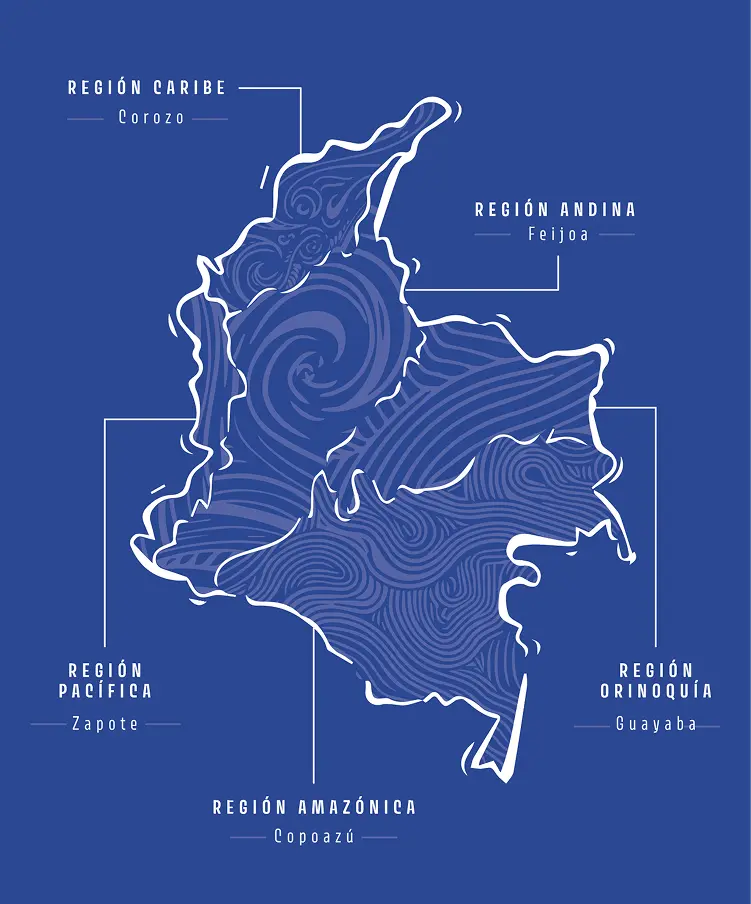
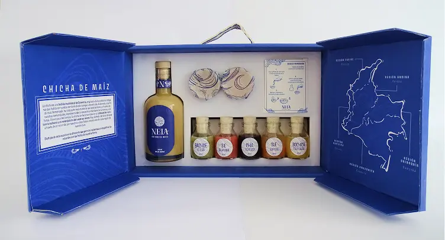
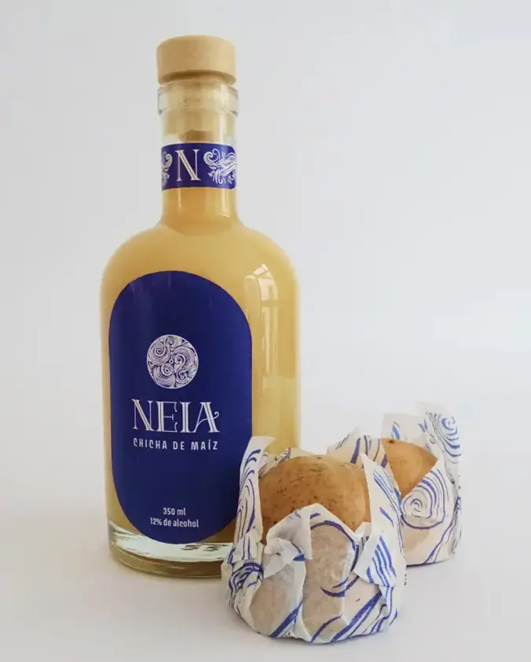

Neia was born as an experience that invites us to rediscover our relationship with "chicha", the ancient Muisca drink. More than a simple drink, "chicha" is a living testimony of our history, an expression of identity that connects us with our roots and traditions. Through authentic flavors of our country and its regions, Neia rescues its cultural value and elevates the user experience.

Neia



Neia is a brand created to honor and celebrate chicha, as a traditional drink. His name means "gold"in Muisca, symbolizing corn as the true treasure of a culture.
Neia's design is inspired by the corn cob, the wrapper that protects its interior and, when removed, reveals the true gold. This visual metaphor reflects the essence of the brand, highlighting the cultural richness and ancestral value of this traditional drink.



